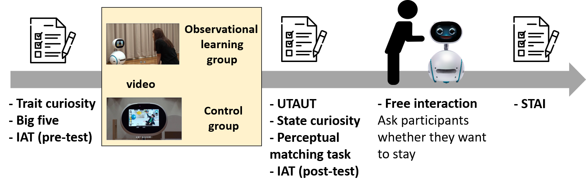
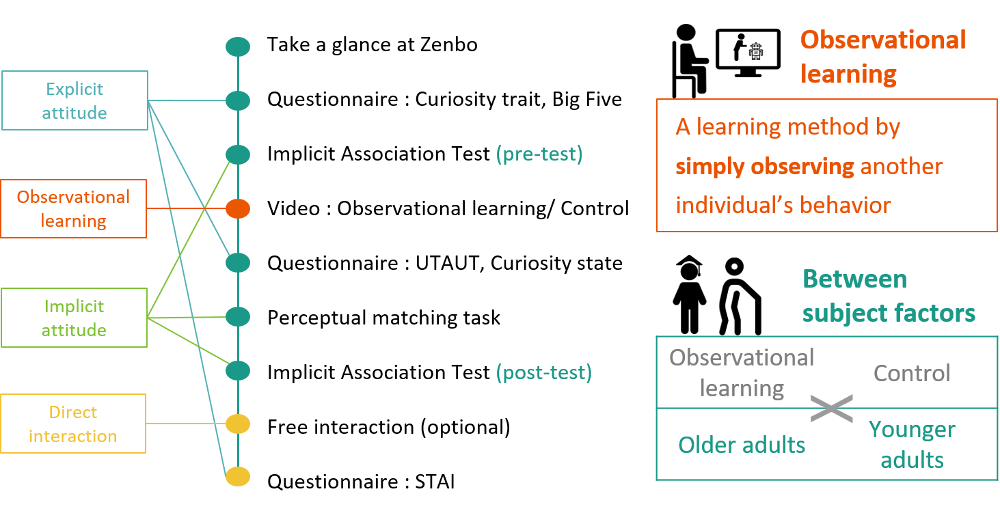
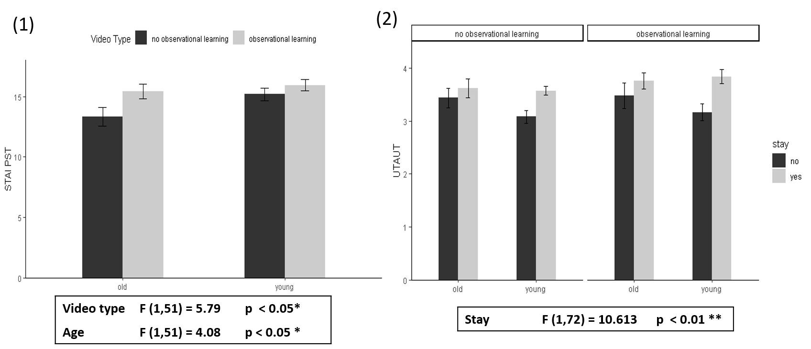
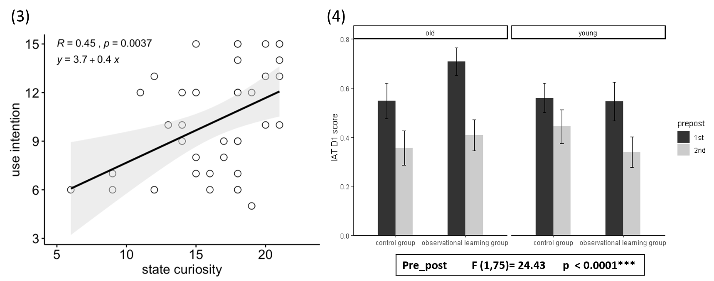

Can Older Adults’ Acceptance toward Robots Enhanced by Observational Learning ?

Research Background
- Although older adults had higher negative attitudes toward robots than younger adults, their acceptance toward robots could be enhanced after direct interaction with robots (Chien et al, 2019).
- Mere observation of a model’s responses had a facilitatory effect on participants’ reactions in immediate social influence setting (Bandura, 1961).
- In computer learning, behavior modeling yielded better training outcomes than other methods such as lecture-based instruction (Yi, M. Y., & Davis, F. D., 2003 ).
Goal of this study
- We aimed to investigate possible alternative options ─ other than direct interaction ─ to enhance older adults’ acceptance toward robots.

Methods
-
80 participants
- 40 younger adults, 40 older adults
- 20 people / group
-
Participants watched video for 3 min
- Observational learning (Someone interacted with robot)
- Control (Robot introduced its function alone)

-
Measures
- Trait curiosity questionnaire
- Big Five Personality Test
- Unified Theory of Acceptance and Use of Technology (UTAUT)
- State curiosity questionnaire
- Implicit association task (IAT)
- perceptual matching task
- Subjective Technology Adaptivity Inventory (STAI)

Stimuli
Two identical films with only difference in interaction with human or not
Results

-
The effect of observational learning appeared after direct interaction with the robot: The observational group showed higher scores in perceived safety of technology (PST) in STAI.
-
Participants with higher score in UTAUT were more willing to stay and to interact with the robot.
 3. In the observational learning group, participants with higher state curiosity also had higher use intention toward the robot.
- Regardless of age and video type, the D1 score of IAT declined after watching the video. The result implied that the implicit attitude toward robots could be changed in a short period of time.
References
-
Yi, M. Y., & Davis, F. D. 2003. Developing and validating an observational learning model of computer software training and skill acquisition. Information Systems Research. 14(2), 146-169. https://doi.org/10.1287/isre.14.2.146.16016
-
Sung-En Chien, Li Chu, Hsing-Hao Lee, Chien-Chun Yang, Fo-Hui Lin, Pei-Ling Yang, Te-Mei Wang, andSu-Ling Yeh. 2019. Age Difference in Perceived Ease of Use, Curiosity, and Implicit Negative Attitude towardRobots. ACM Trans. Hum.-Robot Interact. 8, 2, Article 9 (May 2019), 19 pages. https://doi.org/10.1145/3311788
-
Chu, L., Chen, H. W., Cheng, P. Y., Ho, P., Weng, I. T., Yang, P. L., … & Fung, H. H. 2019. Identifying Features that Enhance Older Adults’ Acceptance of Robots: A Mixed Methods Study. Gerontology. 1-10. https://doi.org/10.1159/000494881
-
Lhuisset, L., & Margnes, E. 2015. The influence of live-vs. video-model presentation on the early acquisition of a new complex coordination. Physical Education and Sport Pedagogy. 20(5), 490-502. https://doi.org/10.1080/17408989.2014.923989
-
Bandura, A., Ross, D., & Ross, S. A. 1961. Transmission of aggression through imitation of aggressive models. The Journal of Abnormal and Social Psychology. 63(3), 575-582. http://dx.doi.org/10.1037/h0045925
-
Heerink, M., Kröse, B., Wielinga, B., & Evers, V. 2008. Enjoyment intention to use and actual use of a conversational robot by elderly people. Proceedings of the 3rd ACM/IEEE international conference on Human robot interaction. 113-120 https://doi.org/10.1145/1349822.1349838
-
Hassani, A. Z. (2011). Touch versus in-air Hand Gestures: Evaluating the acceptance by seniors of Human-Robot Interaction using Microsoft Kinect .Master’s thesis. University of Twente, Netherland. https://doi.org/10.1007/978-3-642-25167-2_42